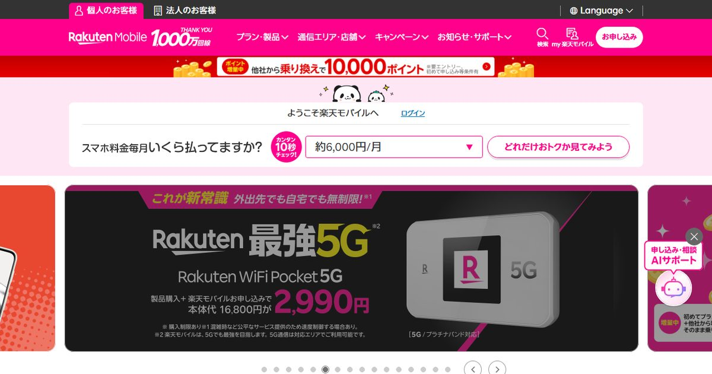
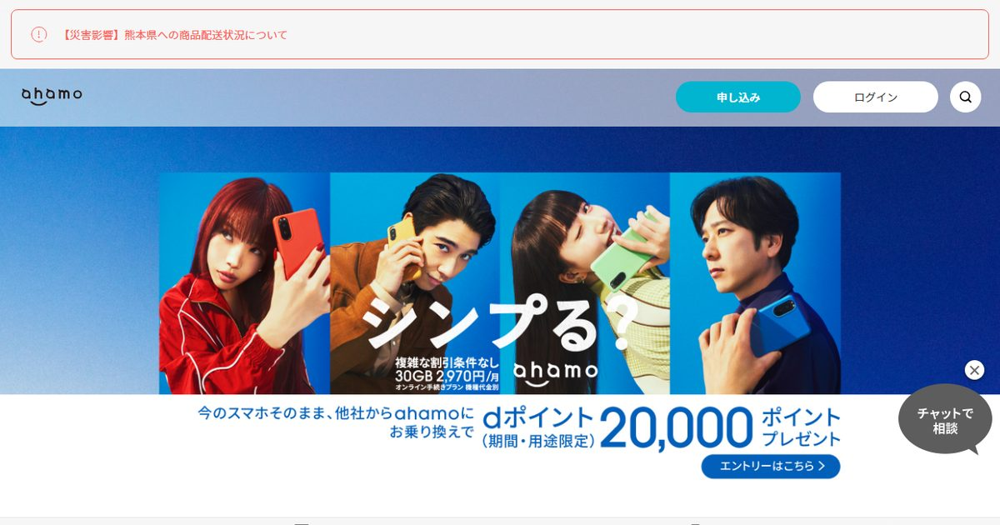
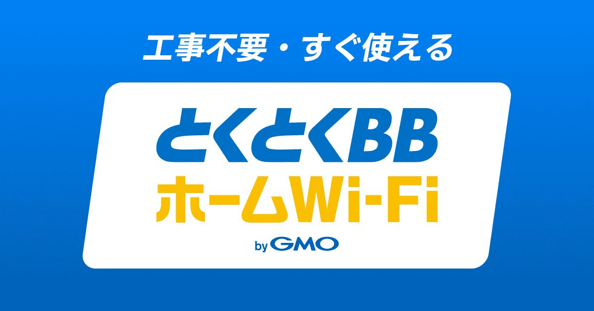

「スマホのギガが余っているのに、家のネットに別で5,000円払っているのはもったいない」。通信費を見直すとき、ほぼ必ず出てくる発想です。実際、テザリングだけで自宅のネットを完結させている人はいます。
ただし、この話にはほとんどの解説記事が触れていない前提条件があります。それは「無制限プランを契約していても、テザリングだけは別枠で上限が設定されていることがある」という点です。ここを見落としたまま乗り換えると、月の後半に128kbpsで固まるという事故になります。
テザリングが固定回線の代わりになるのは、①テザリングに個別上限がないプラン、②月40GB以内に収まる使い方、③つなぐ機器が2〜3台までこの3つを同時に満たす人です。一人暮らしでWeb会議と調べもの中心なら十分成立します。逆に、家族で使う・テレビで動画を流す・オンラインゲームをするのいずれかに当てはまるなら、容量ではなく安定性の面で先に破綻します。
テザリング上限なしで容量重視:ahamoを見る公式サイトへ →PR・相談や申し込みの前に、料金と条件は公式サイトでご確認ください
先に自宅の必要スペックを知りたいなら
テザリングで足りるかどうかは、結局「どれくらいの速度と容量が要るか」で決まります。用途から逆算するなら診断が早いです。
無制限なのにテザリングだけ上限がある、という落とし穴
まずここから確認してください。「データ無制限プラン」と「テザリング無制限」は同じ意味ではありません。
auの現行プラン「使い放題MAX＋ 5G／4G」の公式ページには、次の注記があります。
「テザリング、データシェアのご利用には、合計60GBの上限があります。」「上限を超えた場合、これらのサービスの通信速度は送受信最大128kbpsとなります」
スマホ本体で使うぶんは無制限でも、テザリング経由の通信だけは月60GBで頭打ちになり、超えると128kbps。文字だけのページを開くのもつらい速度に落ちます。しかも、受付を終了した旧プラン「使い放題MAX 5G／4G」では、この上限が30GBでした。古い契約のまま「うちは無制限だから」と考えている人は、実際にはもっと厳しい枠で運用していることになります。
この仕様は「スマホを固定回線代わりに使われると基地局が混雑する」という事情から来たもので、キャリアごとに方針が分かれています。だからこそ、テザリング運用を検討するならプランを選ぶ段階で上限の有無を見る必要があるわけです。「無制限だからいける」で契約すると、月の後半に必ず詰まります。
キャリア別・テザリング上限の一覧(2026年9月時点)
主要プランのテザリングの扱いを、各社公式サイトの表記にもとづいて並べました。金額はいずれも割引前・税込です。家族割や光回線とのセット割を適用すれば、実際の支払いはこれより下がります。
| プラン | 月額(割引前) | データ量 | テザリングの上限 |
|---|---|---|---|
| 楽天モバイル Rakuten最強プラン |
3,168円 (20GB超で上限固定) |
無制限 | 公式に個別上限の記載なし ※混雑時の速度制御あり |
| ahamo | 2,970円 | 30GB 増量中は40GB |
データ量の枠内 個別上限の記載なし |
| ahamo +大盛りオプション |
4,950円 | 110GB 増量中は120GB |
データ量の枠内 個別上限の記載なし |
| ドコモ MAX | 8,448円 | 無制限 | 公式に個別上限の記載なし |
| ソフトバンク テイガク無制限 |
8,008円 | 無制限 | 個別上限の記載なし 直近30日で300GB超は最大4.5Mbps |
| au 使い放題MAX＋ 5G／4G |
7,788円 | 無制限 | テザリング＋データシェア 合計60GB(超過後128kbps) |
※ 2026年9月に各社公式サイトで確認した内容にもとづく目安です。ahamoの40GB／120GBは「データ増量おためしキャンペーン」適用中の数値で、期間限定です。キャンペーンや提供条件は変わることがあるため、申し込み前に必ず公式サイトでご確認ください。
- テザリング前提でいちばん素直なのは楽天モバイル。無制限で3,168円は、光回線の月額より安い水準です
- 容量で選ぶならahamo大盛りの110GB(増量中120GB)で4,950円が現実的なライン
- auの無制限プランはテザリング運用に向きません。60GBを超えた時点で実質的に使えなくなります
- ドコモ・ソフトバンクの無制限は上限の記載こそないものの、月額8,000円台。光回線を引いたほうが安く済む価格帯です
なお、楽天モバイルはA8ネットでの提携審査中のため、ここでは公式サイトへの通常リンクを置いています。テザリング運用は電波の入り方で快適さが決まるので、エリア判定だけは先に済ませておくと確実です。
月の上限を「1日あたり」に割り戻す逆算表
「40GBあれば足りるのか」は、月単位で考えると感覚がつかめません。30日で割って、1日あたりに直すと一気に判断しやすくなります。
| 月の容量 | 1日あたり | 1日にできることの目安 |
|---|---|---|
| 20GB | 約0.67GB | Web会議1時間+調べもの。動画はほぼ不可 |
| 30GB | 約1.0GB | YouTubeを480pで2時間、または1080pで30分 |
| 40GB (ahamo増量中) |
約1.33GB | Web会議2時間+YouTubeを1080pで30分 |
| 60GB (auのテザリング上限) |
約2.0GB | YouTubeを1080pで1時間+日常の調べもの |
| 120GB (ahamo大盛り増量中) |
約4.0GB | YouTubeを1080pで2時間+Web会議2時間 |
| 無制限 | 上限なし | 4K視聴・大型ゲームのダウンロードも可 |
※ 動画の消費量はNTT東日本・イオンモバイルなどが公表する目安(YouTubeを1080pで視聴した場合は1時間あたり約2GB、480pで約0.5GB)にもとづく編集部の試算です。実際の消費は端末・アプリ・回線状況で変動します。
この表で効いてくるのが画質の差です。同じ1時間の視聴でも、480pなら約0.5GB、1080pなら約2GBと4倍の開きがあります。テザリング運用に切り替えるなら、動画アプリの画質設定を落とすだけで実質的な容量が数倍になる、という理解が要ります。
逆に、月の枠を一撃で壊すのがゲームのダウンロードと大型アップデートです。最近のタイトルは1本で数十GBあり、40GBのプランなら1本入れただけで月が終わります。PCのOSアップデートも数GB単位です。この手の「まとまった通信」が定期的にある人は、職場や公共のWi-Fiを併用する運用が前提になります。
5つの質問で判定:テザリング運用が成立するか
ここまでの内容を、判定に落とし込みます。1つでも「はい」があれば、テザリング単独はおすすめしません。
-
Q1. 自宅のネットを2人以上で使いますか?
「はい」なら不可。テザリングは親機のスマホが家にある時間しかネットが使えません。あなたが外出したら、家族はオフラインになります。この一点だけで、同居人がいる家庭では現実的な選択肢から外れます。
-
Q2. テレビやゲーム機をネットにつないでいますか?
「はい」なら不可。テレビでの動画視聴は1080p以上が既定になっていることが多く、消費量が跳ね上がります。ゲーム機はダウンロード量が大きいうえ、オンライン対戦ではPingの安定性が問われます。モバイル回線経由のテザリングは遅延の揺れが大きく、対戦系には向きません。
-
Q3. 平日の日中、スマホを持って外出しますか?
「はい」なら要注意。在宅で完結する働き方なら問題ありませんが、通勤する人はスマホごとネットが家から出ていくため、留守中はスマートスピーカー・見守りカメラ・録画機器がすべて止まります。
-
Q4. 月の合計データ量が、契約の上限を超えそうですか?
「はい」なら不可。上の逆算表で、自分の使い方が1日あたり何GBかを確かめてください。判断に迷う場合は、スマホの設定にある通信量の統計(直近1ヶ月)を見るのが正確です。
-
Q5. 契約中のプランにテザリングの個別上限がありますか?
「はい」なら不可、またはプラン変更が前提。auの使い放題MAX＋のように、無制限プランでもテザリングだけ60GBで止まる契約があります。提供条件書か公式サイトの注記で確認してください。
すべて「いいえ」だった人。具体的には一人暮らし・在宅時間が長い・動画は中画質・つなぐのはPCとタブレット程度という人なら、テザリング運用は十分に成立します。この条件に当てはまるなら、自宅の回線契約を持たないという選択にも合理性があります。
月額で比べる:テザリング/ホームルーター/光回線
次は金額です。テザリング運用の強みは「スマホ代しか払わない」ことなので、比較はスマホ代を含めた総額でやります。
| 構成 | 月額の目安 | 向いている人 |
|---|---|---|
| 楽天モバイル テザリング単独 |
3,168円 | 一人暮らし・楽天回線のエリアが良好・動画は中画質中心 |
| ahamo(増量中40GB) テザリング単独 |
2,970円 | Web会議とブラウジング中心・動画はあまり見ない |
| ahamo大盛り(増量中120GB) テザリング単独 |
4,950円 | 動画をそこそこ見る・工事はしたくない・引越しが多い |
| 格安SIM+ ホームルーター |
約5,500〜7,000円 (SIM 1,500円前後+本体4,000〜5,000円) |
家族で使う・工事ができない・すぐ使い始めたい |
| 格安SIM+ 光回線(マンション) |
約5,300〜6,000円 (SIM 1,500円前後+回線3,773円〜) |
在宅ワーク・オンラインゲーム・家族で同時利用 |
※ 2026年9月時点の目安です。光回線の金額はGMOとくとくBB光のマンションタイプ、ホームルーターは主要3社の標準的な水準を参考にしています。実際の金額はキャンペーン・エリア・建物の設備で変わります。
見てのとおり、差額は月2,000〜3,000円です。年間にすれば24,000〜36,000円で、けっして小さくはありません。ただし、この差額で買っているのは「速度」ではなく「家にネットが常にある状態」です。ここをどう評価するかが判断の分かれ目になります。
なお、テザリングを常用にするくらいなら、同じモバイル回線ならホームルーターのほうが総合的に有利という考え方もあります。据え置きなので発熱を気にせず、同時接続台数も多く、あなたが外出しても家のネットは生きているからです。工事なしという利点はそのままなので、モバイル型と据え置き型の違いを見比べてから決めるとムダがありません。ランニングコストが気になる場合はホームルーターの電気代もあわせてどうぞ。
プラン別の実物:テザリング前提の2択と、受け皿の2択
ここまでの条件を、実際に選べるサービスに落とし込みます。前半2つはテザリングで固定回線を代用する前提の選択肢、後半2つは試してみて足りなかったときの受け皿です。
楽天モバイル(Rakuten最強プラン)
楽天モバイル


公式ページにテザリング個別の上限の記載がなく、20GBを超えても3,168円でギガ無制限という段階制。光回線の月額より安い水準で自宅のネットを賄える可能性があるのは、現状ここだけです。弱点は電波で、建物の奥や地下では実測が落ちます。置き場所を固定できるかが使えるかどうかを分けるので、申し込み前に対応エリアの確認を。
ahamo
NTTドコモ|オンライン専用プラン


ドコモ回線をそのまま使うため、電波の不安を増やさずにテザリング運用へ移れます。2,970円のままデータ増量おためしキャンペーンで40GB、大盛りオプション(+1,980円)なら120GBまで。公式ページにテザリング個別の上限の記載はありません。1日あたり1.33GB(40GB)/4.0GB(120GB)を上の逆算表と突き合わせて、自分の使い方が収まるか確認してください。
とくとくBBホームWi-Fi
GMOインターネット|ホームルーター


テザリングと同じモバイル回線を使いますが、据え置きなので発熱を気にせず、同時接続台数も多く、あなたが外出しても家のネットが生きています。工事不要でコンセントに挿すだけ、引越し先へもそのまま持っていけます。「1ヶ月試したが容量か安定性が足りなかった」という場合に、いちばん切り替えコストが小さい選択肢です。
BIGLOBE WiMAX +5G
ビッグローブ(回線はUQコミュニケーションズ)
同じ契約体系で据え置き型とポケット型のどちらも選べるのが強みです。「家ではホームルーター、外はスマホのテザリング」という分担にすると、スマホの月枠を自宅利用で食い潰さずに済みます。au・UQのスマホを使っているならセット割の対象。プラスエリアモードの扱いなど制限の中身はWiMAXの「無制限」は本当かで整理しています。
数字に出ない5つの限界
料金表と容量だけで決めると、あとから効いてくるのがここです。実際にテザリング運用をやめる理由は、たいてい容量ではなくこの5つです。
- ①同時接続台数:iPhoneのWi-Fiテザリングは最大5台、BluetoothとUSBは各1台が目安。台数が増えるほど速度も安定性も落ちるため、実用は2〜3台までと考えたほうが無難です
- ②発熱とバッテリー:長時間の連続利用は本体が熱を持ち、電池への負荷が増えます。充電しながらの高負荷利用は特に温度が上がりやすい状態です
- ③着信・通話との競合:親機のスマホで通話すると通信が不安定になる機種があり、Web会議中の着信が事故につながります
- ④屋内の電波:モバイル回線は建物の奥や地下で弱くなります。窓際でしか安定しない部屋だと、スマホの置き場所を固定されます
- ⑤遅延(Ping)の揺れ:平均速度は出ても、遅延が一定しません。対戦ゲームやリアルタイムの共同編集には向かない特性です
特に③と⑤は、テレワークをしている人に効きます。会議中に自分だけ音が途切れる、画面共有が止まる、といった症状は速度の問題ではなく安定性の問題で、テザリングでは根本的に解消しづらい部分です。在宅勤務の回線に何が必要かはWeb会議が途切れるときの対処とテレワーク向けの回線構成で整理しています。
②についても補足します。スマホを常時アクセスポイントとして動かすということは、本来なら休んでいる時間帯もずっと通信モジュールを動かし続けるということです。1日8時間×毎日となれば、端末の消耗は早まる方向に働きます。「回線代を月3,000円節約した結果、スマホの買い替えが1年早まった」となると、差し引きはほぼゼロです。
それでもやるなら:失敗を減らす6つの設定
条件を満たしていて、テザリング運用でいくと決めた人向けの実務です。ここを押さえるだけで事故が減ります。
-
PC側を「従量制課金接続」に設定する
WindowsもmacOSも、接続中のネットワークを従量制として登録できます。これをやっておくと、OSの大型アップデートやクラウド同期が自動で始まらなくなります。テザリング運用で最初にやるべき設定です。
-
動画アプリの画質を固定する
YouTubeもNetflixもアプリ側で上限画質を設定できます。480p〜720pに固定するだけで、消費量は数分の一になります。自動設定のままだと、電波がいい時間帯に勝手に1080pへ上がります。
-
クラウドバックアップの自動実行を止める
写真のクラウド同期、PCのバックアップ、ゲームのアップデートは、Wi-Fi接続時に自動実行される設定になっていることが多いです。テザリングのWi-Fiも「Wi-Fi」として認識されるため、意図せず走ります。
-
データ使用量のアラートを設定する
iPhoneならモバイル通信の統計を月初にリセット、Androidならデータ警告と上限を設定できます。上限の8割で通知が来るようにしておけば、月末の事故はかなり防げます。
-
スマホの置き場所を決めて、風通しを確保する
電波の入る窓際で、ケースを外し、充電ケーブルを挿しっぱなしにできる場所。ここを固定できるかどうかが、テザリング運用の快適さをほぼ決めます。ベッドの上や引き出しの中は熱がこもるため避けてください。
-
1ヶ月試してから、今の回線を解約する
いちばん重要です。先に解約すると、合わなかったときに再契約(と工事)が必要になります。今の回線を残したまま1ヶ月テザリングだけで生活してみて、データ使用量と不便さを実測してから決めてください。解約の違約金と返却物は事前に確認しておくとスムーズです。
よくある質問
テザリングだけで自宅のネットを賄えますか?
無制限プランならテザリングも無制限で使えますか?
テザリングで月に何GB必要になりますか?
テザリングは何台まで同時につなげますか?
テザリングを続けるとスマホのバッテリーは劣化しますか?
テザリングとホームルーター、どちらがいいですか?
まとめ:成立するかは「上限・容量・台数」の3つで決まる
- 無制限プランでもテザリングだけ別枠の上限があることがある(auは合計60GB・超過後128kbps)
- テザリング前提なら楽天モバイル(3,168円・無制限)かahamo大盛り(4,950円・110GB/増量中120GB)が現実的
- 月の容量は30日で割って1日あたりに直すと判断しやすい。40GBなら1日1.33GB
- 同居人がいる・テレビをつなぐ・日中に外出する、のどれかに当てはまるならテザリング単独は不可
- 差額は月2,000〜3,000円。買っているのは速度ではなく「家にネットが常にある状態」
- 解約する前に、今の回線を残したまま1ヶ月テザリングだけで生活して実測する
「やっぱり自宅にも回線が要る」となった場合、工事なしですぐ使いたいならホームルーター3社比較、速度と安定性を優先するなら光回線7社比較へ。スマホ側の料金そのものを下げたい人は格安SIMの比較を先に見ておくと、総額での最適解が見つけやすくなります。
- au「使い放題MAX＋ 5G／4G」料金ページ(テザリング・データシェア合計60GBの上限、超過後128kbps。2026年9月確認)
- au「使い放題MAX 5G／4G」お申し込み受付終了プランのページ(旧プランのテザリング上限30GB。2026年9月確認)
- NTTドコモ「ドコモ MAX」料金ページ(データ無制限時8,448円/月・税込。2026年9月確認)
- ahamo よくあるご質問「ahamoの料金プランについて教えてください。」(月額2,970円/30GB、大盛りオプション1,980円で合計110GB、データ増量おためしキャンペーンで40GB/120GB。2026年9月確認)
- ソフトバンク「テイガク無制限」料金ページ(割引前7,280円/月・税込8,008円、直近30日間で300GB超の場合は最大4.5Mbpsで速度制御。2026年9月確認)
- 楽天モバイル「Rakuten最強プラン」料金ページ(3GBまで税込968円、20GBまで税込2,068円、20GB超過後は税込3,168円でギガ無制限。2026年9月確認)
- NTT東日本およびイオンモバイルの公開資料(YouTube視聴時のデータ消費量の目安。1080pで1時間あたり約2GB、480pで約0.5GB)
- 本文中の1日あたりデータ量および月額の比較は、上記をもとにした編集部の試算です。金額はすべて割引前・税込で、2026年9月時点の目安です